A live map
Everyone's position with battery level, whether they're walking or driving, and how long ago it arrived. Checked every few minutes, and second by second while you watch someone on Live.
Hearth is a family safety app you run on your own server. Commercial ones keep your positions on theirs, under a privacy policy you don't control and they can change. Hearth has no servers of its own, and there is nobody on the other end to sell anything to.
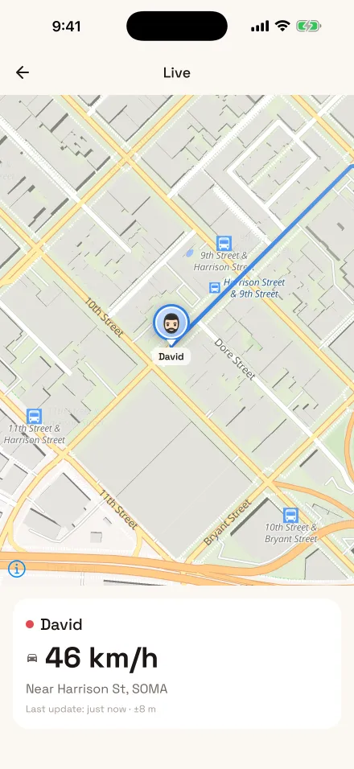
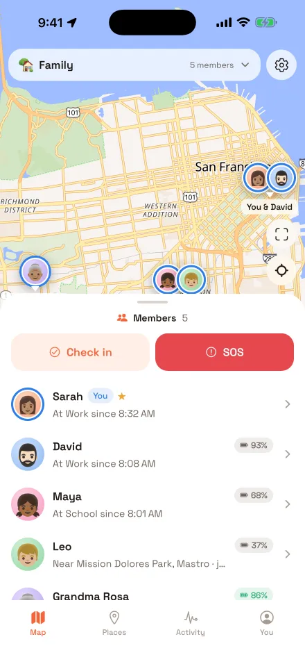
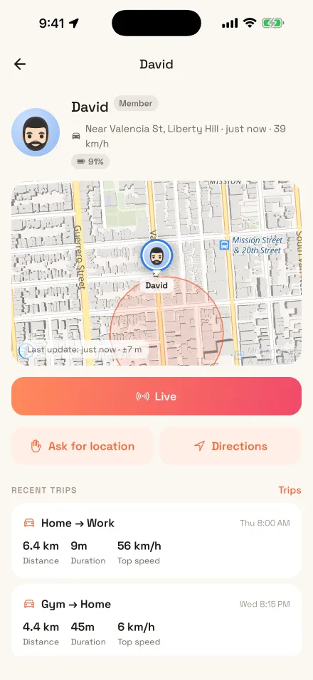
Every picture on this page is the app itself: a release build, running against a server with a made-up family on it.
Open Live on anybody who shares precisely with you, driving or standing still, and their phone sends a fix a second, with speed and street, for as long as you keep the page open. Within seconds of the last person watching leaving, it goes back to one fix every few minutes.
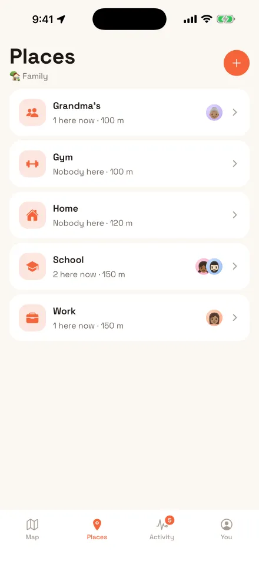
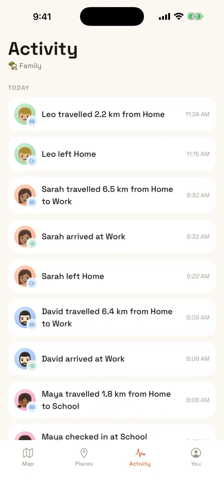
Draw a circle around home, school or work. Arrivals and departures land in the family feed next to every trip, and on everyone's lock screen once push notifications are set up.
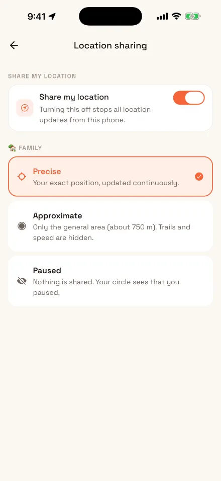
Precise, an area about 750 metres wide, or paused, set separately for each circle. Turn off Share my location and the phone stops reporting altogether.
None of it phones home. Every feature below runs against the server you control.
Everyone's position with battery level, whether they're walking or driving, and how long ago it arrived. Checked every few minutes, and second by second while you watch someone on Live.
Draw a circle around home, school or work and everyone is told on arrival and departure. Leaving needs more distance than arriving, so a phone sitting on the boundary doesn't spam the family.
Journeys are detected and drawn as a trail with distance, duration and top speed. You choose how many days the server keeps, or none at all.
Hold to raise an alert that reaches everyone at full volume with your position. Or send a quiet "I got here safely" when that is all it needs to be.
Speeding, low battery, and a crash the phone works out from its own accelerometer, gyroscope and barometer. It asks you first, and only silence raises the alarm. The family sets each one, and speeding and crash alerts stay off until it turns them on.
See that someone was driving at 95 and send them "slow down" in one tap. It goes to that one person, shows on their map, and lands in the family feed.
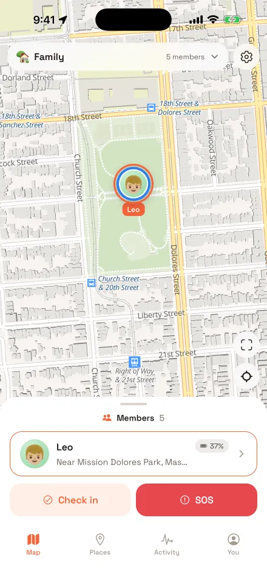
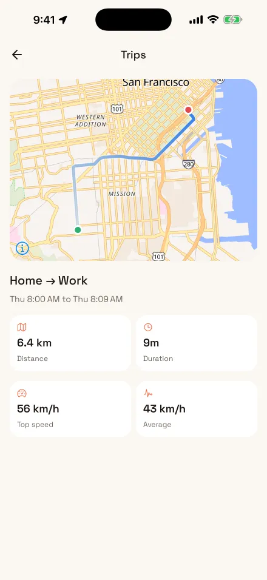
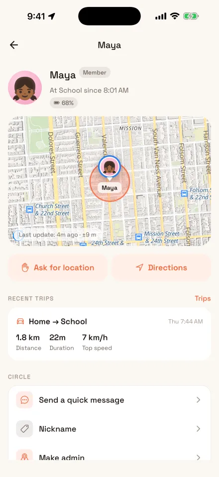
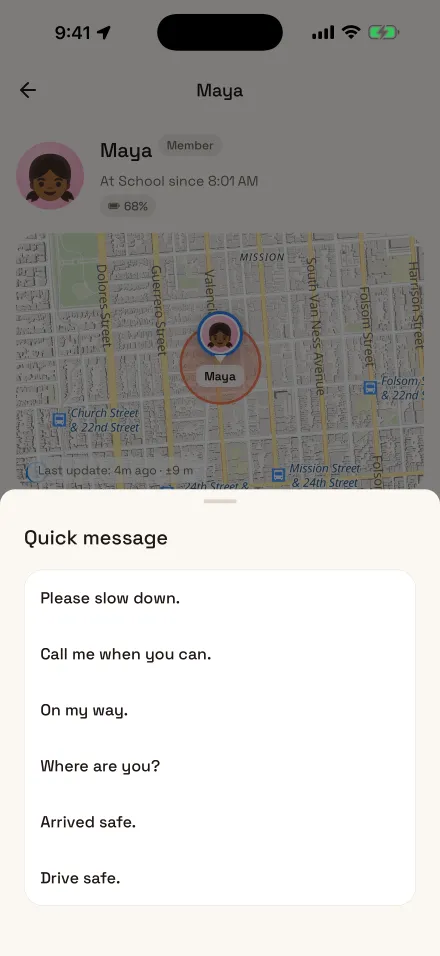
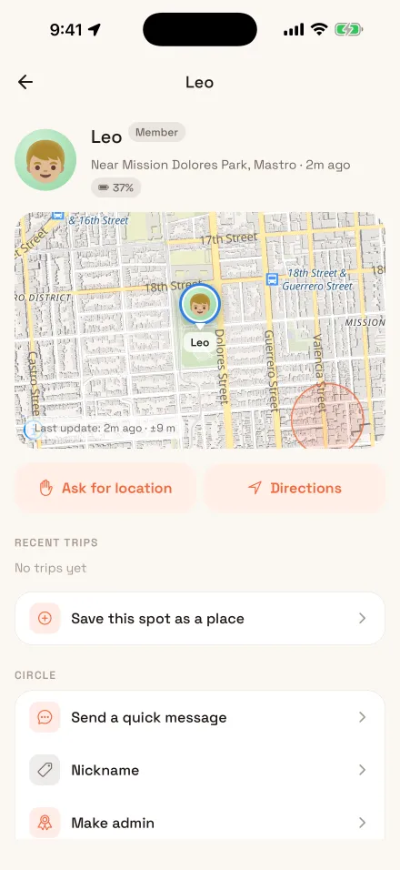
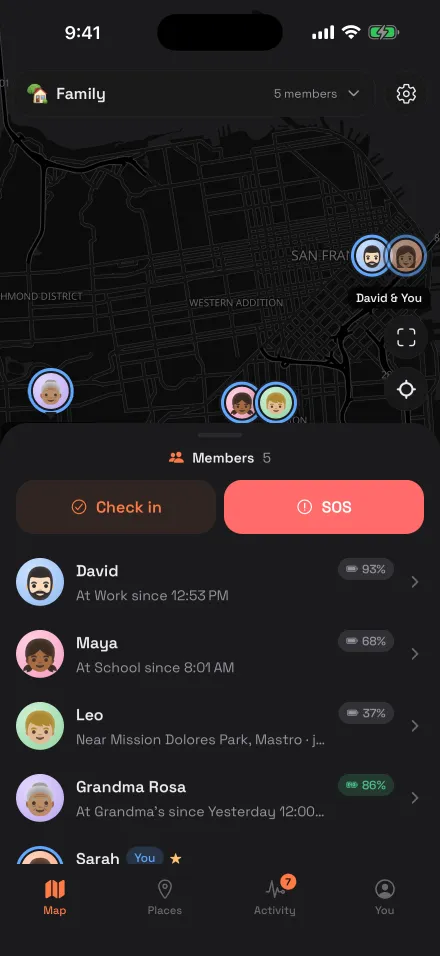
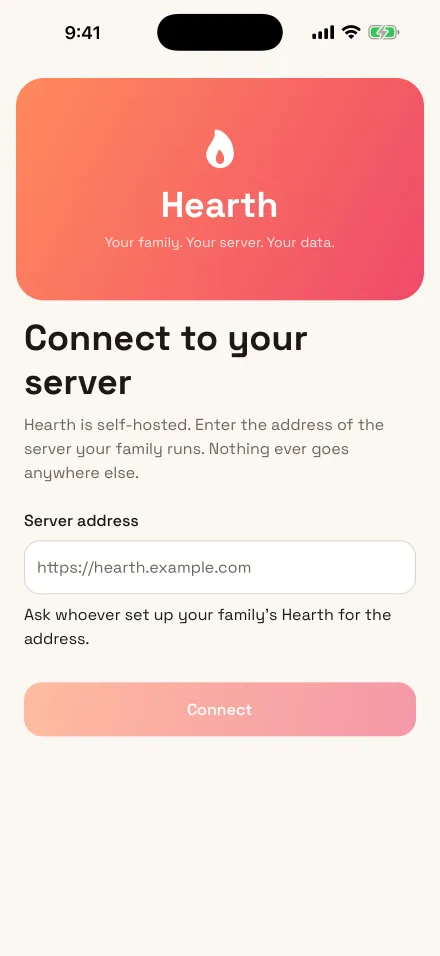
A family safety app is only as private as whoever runs it. There is no company running Hearth, no account with us, and no analytics, ad network or crash reporter anywhere in the app. When you stop running the server, the data is gone, because it was only ever yours.
In January 2025 the FTC finalized orders against two data brokers, Gravy Analytics and Mobilewalla, for selling location data that traced people from their phones to health clinics and places of worship. Read the FTC's announcement.
A family map is that data in finer detail, down to where your children sleep and go to school. Hearth keeps it on a machine you own.
The server is one Docker image for amd64 and arm64, with Postgres beside it. Migrations run on the first start and your admin account is created then, so nobody who finds the address can claim it before you. A Raspberry Pi 4 or the smallest VPS you can rent is plenty for a family.
It asks for a domain, your email and a password, makes up every other secret, and starts Hearth with Caddy getting the HTTPS certificate. Leave the domain empty to try it on your own network first.
curl -fsSL https://qureshi-dh.github.io/hearth/install.sh | sh
Piping a script into a shell means trusting it, so
read it first. It writes two files into ./hearth and runs
docker compose up, nothing else.
Download the compose file and the example settings, fill in six values, and start it. Put any reverse proxy in front for HTTPS: the guide has Caddy, nginx and Traefik configs to paste.
mkdir hearth && cd hearth
curl -fsSLO https://raw.githubusercontent.com/Qureshi-DH/hearth/main/deploy/compose/docker-compose.yml
curl -fsSL -o .env https://raw.githubusercontent.com/Qureshi-DH/hearth/main/.env.example
# set JWT_SECRET, PUBLIC_URL, ADMIN_EMAIL, ADMIN_PASSWORD,
# POSTGRES_PASSWORD and S3_SECRET_ACCESS_KEY in .env
docker compose up -dRender and DigitalOcean open with Hearth's template filled in, database included, and ask only for what you have to choose yourself. Fly.io and Railway take a few steps more. On all four the server picks up the address the host gives it, so invites work from the first start.
A rented server is one the host can read, so your family's map sits with the provider you pick. Free plans that put the server to sleep don't work either: Hearth has to be awake to ask the phones where they are.
Templates for the self-hosting platforms people already have at home. Each one runs the same image and Postgres, and the deploy guide walks through it.
The server is ready to run. The iOS and Android app is built, tested and in store review, and until it's out you build it yourself.
No. There is no Hearth company server and no account with anyone. You run the server, you create the admin account on it, and everyone else joins with an invite you send from the app.
In the Postgres database on your server, and nowhere else. Each circle chooses how many days of history to keep, up to a ceiling you set on the server, and anyone can export or erase their own history from the app.
A little. If you can point a domain at a machine and paste one command, the install script does the rest. A one-click host like Render or DigitalOcean skips the machine altogether, for a monthly fee.
Not yet. Both builds are in review. Until they are out you build the app yourself, which the quick start walks through.
Yes, with a catch. Alerts can go through ntfy, which you host yourself. Only Expo push can wake the app, though, so without it a closed app reports from its own background check, about every quarter of an hour on Android and less often on an iPhone, instead of when the server asks.
Yes. The Render and DigitalOcean buttons set everything up, and Fly.io, Railway, Coolify, CapRover, Portainer, Unraid and Kubernetes have templates. Whoever runs the machine can read what is on it, so your family's history sits with the host you pick. Free plans that sleep don't work, because the server has to be awake to ask phones where they are.
Hearth is free and open source under the AGPL-3.0. The only cost is the server: a Raspberry Pi you already own, or the smallest VPS you can rent.
It does the same job: a live map, place alerts, SOS, crash detection and driving. The difference is where the data lives. Theirs sits on their servers under their privacy policy. Yours sits on a server you run, with no analytics, no ads and nobody in the middle.
Hearth is a small open source project with no marketing budget. A star on GitHub is how people searching for a private family locator come across it, and a bug report from your setup is worth more than you'd think.